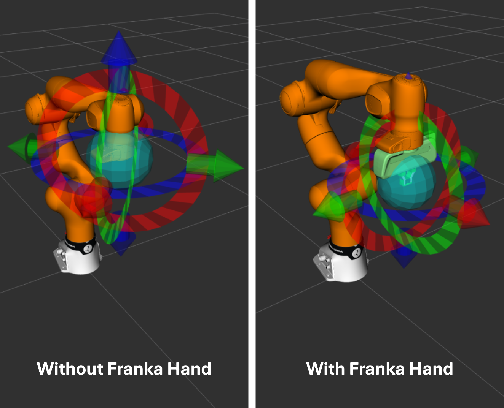

franka_fr3_moveit_config
This package contains the MoveIt 2 configuration for the FR3 robot.
Move Group
There is one move group called (robot_type)_arm, where (robot_type) is the robot
type selected by the user.
The TCP placement depends on the end-effector configuration. If the Franka Hand is loaded, the TCP is located between the fingertips and its axes are parallel to the gripper frame. Otherwise, the TCP is located at the robot flange.

Visualization of the different TCP placements.
Usage
To start MoveIt on a real robot:
ros2 launch franka_fr3_moveit_config moveit.launch.py robot_ip:=<fci-ip>
Then activate the MotionPlanning display in RViz.
To test the setup without a robot, start MoveIt with fake hardware:
ros2 launch franka_fr3_moveit_config moveit.launch.py robot_ip:=dont-care use_fake_hardware:=true
Wait until MoveIt prints the green You can start planning now! message. Then toggle
PlanningScene off and on again, and enable MotionPlanning.
Launch arguments
Name |
Type |
Default |
Description |
|---|---|---|---|
|
string |
required |
Hostname or IP address of the robot. |
|
string |
|
Namespace for the robot. |
|
bool |
|
Whether to load the gripper or not (true or false). |
|
string |
|
End-effector ID to use. Available options: |
|
bool |
|
Use fake hardware. |
|
bool |
|
Fake sensor commands. Only valid when |
|
bool |
|
Database flag. |
Configuration Files
This package includes:
Motion planning configuration for the FR3 robot
Joint limits and safety settings
Planning groups and link configurations
Kinematics solver configuration (kinematics.yaml)
For the Joint Impedance With IK example controller, you can change the kinematic solver
in this package’s kinematics.yaml file.